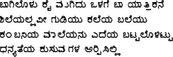
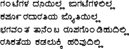
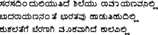
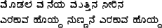
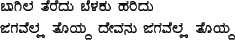
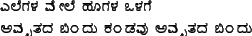
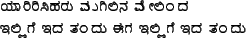
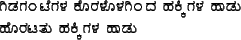
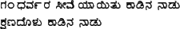

These examples have been taken from the KanTeX package, with modifications for use the ITRANS transliteration scheme.



This is the input text that produced the above:
\centerline{#kannada kaleya bale#endkannada }
\centerline{kaleya bale: By Kuvempu }
{#kannada
bAgiloLu kai mugidu oLage bA yAtrikane\\ shileyallavI guDiyu kaleya baleyu\\ kaMbaniya mAleyanu edeya baTTaloLiTTu\\ dhanyateya kusumagaLa arpisilli\\ ga.nTegaLa daniyilla jAgaTegaLililla\\ kapU^rradAratiya jyotiyilla\\ bhagavaMta tAneMba rUpago.nDihudilli\\ rasikateya kaDalukki harivudilli\\ sarasadiMduliyutide shileyu rAmAyaNavanilli\\ bAdarAyaNanaMte bhAratavu hADutihudilli\\ kushalatege beragAgi mUkavAgide kAlavilli\\#endkannada }






This is the input text that produced the above:
\centerline{#kannada moDala maneya #endkannada }
\centerline{moDala maneya: By Da Raa Bhendre }
{#kannada
moDala maneya muttina nIrina\\ erakAva hoyda nuNNane erakAva hoyda\\ bAgila teredu beLaku haridu\\ jagavella toyda dEvanu jagavella toyda\\ elegaLa mEle hUgaLa oLage \\ amRRitada bi.ndu ka.nDavu amRRitada bi.ndu\\ yAririsiharu mugilina mEli.nda\\ illige ida ta.ndu Iga illige ida ta.ndu\\ giDaga.nTegaLa koraLoLagi.nda hakkigaLa hADu\\ horaTitu hakkigaLa hADu\\ ga.ndhava^rra sImeyAyitu kADina nADu\\ kshaNadoLu kADina nADu\\#endkannada }
2009-12-04
ITRANS Home Page: http://www.aczoom.com/itrans/